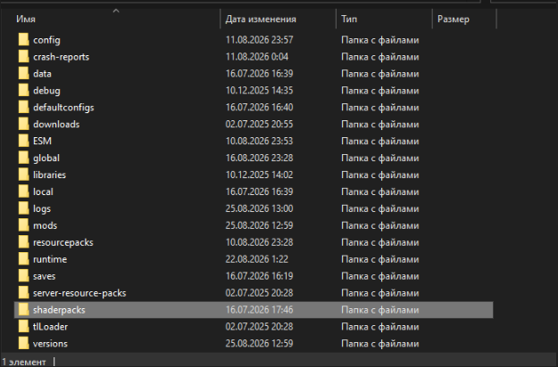
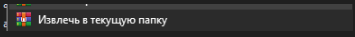
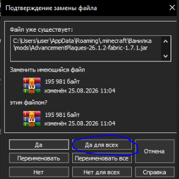

ШАГ 1
Выбор версии Fabric 26.1.1
Запусти TLauncher и в выпадающем списке версий обязательно выбери версию Fabric 26.1.1 (именно Fabric, сборка не запустится на Forge или Vanilla).
Запусти TLauncher и в выпадающем списке версий обязательно выбери версию Fabric 26.1.1 (именно Fabric, сборка не запустится на Forge или Vanilla).
Нажми «Установить» / «Войти в игру», дождитесь скачивания, затем закрой игру, перезапусти TLauncher и кликни на иконку зелёной папки в правом нижнем углу лаунчера.
В открывшуюся корневую папку перемести скачанный архив .zip (или распакованные папки mods, resourcepacks, shaderpacks, config).

Нажми правой кнопкой мыши по архиву и выбери «Извлечь в текущую папку».


Снова жми «Войти в игру» в TLauncher, переходи на первую вкладку сайта, копируй актуальный IP/порт и подключайся к нашему серверу!